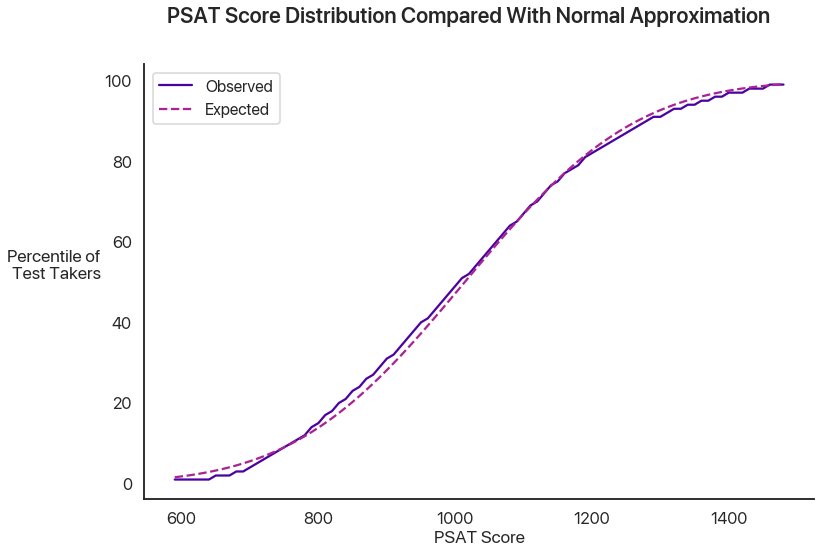
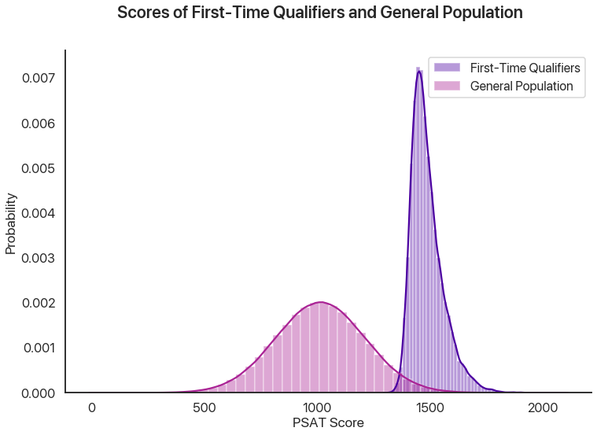
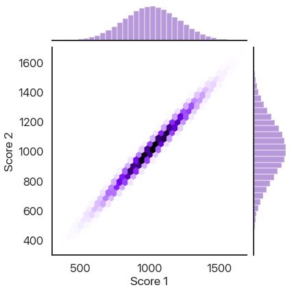
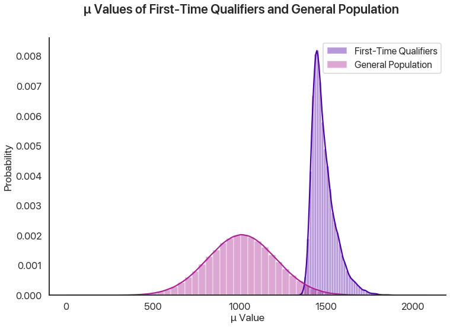
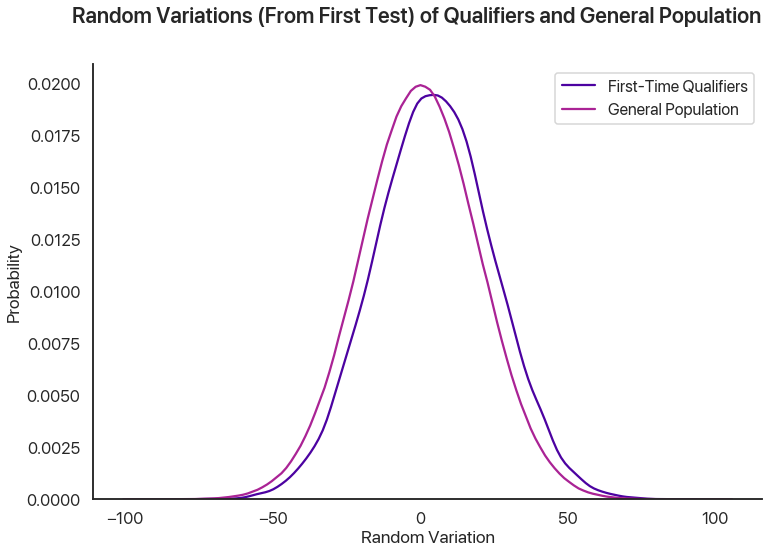

Bayesian Fallacies, Part 1: Of Test Scores, Ski Jumps, and Diseases
In my intro psych class, we discussed two distinct fallacies: common systematic errors in how humans think. These are called Bayes’ Paradox and regression to the mean. I will claim that both of these are really manifestations of the same underlying issue, and in actuality are mathematically the same.
This is going to be pretty involved and pretty long, so I’ll be splitting it up into parts. The first part will just cover the basics of what these two fallacies are and provide a mathematical framework. After that I’ll be using computers to analyze the two, and then I’ll make the math behind what we’re doing more rigorous.
Let’s start with Bayes’ paradox and introduce some statistics!
Bayes’ Paradox
Bayes’ paradox is usually presented like this:
A rare genetic disease afflicts 1 in every 1000 people. Scientists have developed a test for the disease. If an individual has the disease, the test is 100% likely to return a positive result. However, if an individual does not have the disease, the test still has a 5% likelihood of returning a false positive result. You get tested and the result comes back positive. What is the chance of you actually having the disease?
Most people will intuit that your chances are close to even: at the very least, you should be concerned. But the real result is somewhat counterintuitive. Imagine a group of 1000 people. One of them will have the disease on average, and that person will test positive. But, in the 999 unafflicted people, almost 50 of them will have a false positive result. Therefore, in any group like this, there are around 51 people that test positive but only 1 of them has the disease. This makes your chance of actually having the disease, given a positive test result, at less than 2%! This disparity between what we’d expect and what actually happens is Bayes’ paradox.
It’s called Bayes’ paradox because the mathematical framework for analyzing it comes from the famous Bayes’ theorem. It essentially gives us a formula for solving problems like the above. Bayes’ theorem states that, if you denote the chance of \(X\) being true as \(P(X)\) and the chance of \(X\) being true given the knowledge that \(Y\) is true as \(P(X|Y)\). Bayes’ theorem gives a general formula for the conditional probability \(P(A|B)\):
\[P(A|B) = \frac{P(B|A) P(A)}{P(B)}\]
There’s a very interesting field, Bayesian statistics, built around using this formula, and I’ll be exploring that a little today to analyze these statistical problems. First, some more terminology. \(P(A)\) is the prior probability: how likely we think \(A\) is before we know anything else. \(\frac{P(B|A)}{P(B)}\) can be thought of as the strength of the link between \(B\) and \(A\). If \(P(B|A)\) is large compared to \(P(B)\), that means that without \(A\) being true \(B\) is much rarer, and so the fact that we know \(B\) is true gives strong evidence for \(A\).
Just for fun, let’s compute the probability in that disease test example above. In that example, \(A\) is “you have the disease” and \(B\) is “you test positive”. \(P(B|A)\) is the sensitivity, which in this case is \(1\): the test never fails to detect a real instance of the disease. \(P(A)\) is the chance you have the disease without any knowledge of the test result. In this case, that’s \(\frac{1}{1000}\). \(P(B)\) can be decomposed into \(P(A) P(B|A) + P(\text{not } A) P(B|\text{not } A)\) using the laws of probability: \(P(A) P(B|A) = \frac{1}{1000}\) from earlier, but the second term is much bigger: it’s \(\frac{999}{1000} \times \frac{5}{100%}\). Putting everything together, we get that the final probability \(P(A|B)\) is \(\frac{.001}{.001 + .04995} \approx 0.0196\), or about 2%.
Note that, when you put it into this formula, you can see what terms cause this result to be small. Here, it’s that the high false positive rate is more important than the false negative rate, because the chance of you not having the disease is higher than you having it by a lot. If the test never had false positives but instead had a 5% false negative rate, that would be much more accurate.
So, before we connect this to regression to the mean, what is regression to the mean?
Regression to the Mean
Regression to the mean is the idea that being really successful or unsuccessful usually requires a fair bit of luck, and thus outlier results are likely to be followed by less unusual results as luck evens out. Daniel Kahneman, in his classic work Thinking Fast and Slow, describes regression to the mean with a useful example I will steal.
In Olympic ski jump, competitors get two jumps and their score is summed. Kahneman noticed that commentators would predict that, after good jumps, competitors would get “tense” and do worse, and after a bad first jump competitors would relax and do better. The result, performances that even out, is real, but there’s a much simpler explanation: if you had a good first jump, you probably did better than usual for your skill level, and so it’s reasonable that next time you’d do worse. Conversely, if you had bad mojo on the first jump, your mojo is likely to be better next time.
This explains lots of sports-related phenomena. Another example is “sophomore slump”: the pattern that exceptional rookies often disappoint the next year. This can be explained partially by the fact that any truly exceptional rookie probably got a little help from Lady Luck, and so the next year is unlikely to have the same good fortune.
Connecting The Dots
These two thinking errors seem pretty different, but I’m going to argue that they’re both manifestations of the same underlying mathematical phenomenon. To do this, I’ll use a single detailed case study and show how we can think of the way mathematics contradicts our intuition using both ideas.
There are lots of choices for this case study, but because I’m a college freshman in the US I’ll pick a specific example: PSAT scores and National Merit Semifinalist qualification.
Background
Out of the 16,000 semifinalists, around 15,000 become finalists: you have to take a different test and write a short essay. I’m not going to continue making this distinction because “National Merit Semifinalist” is a lot more cumbersome than “National Merit”, and I’ll be saying that a lot. Plus, it’s my blog.
For those of you who are not recent US high school students, let me provide some background. In the US, the PSAT is a nationally-normed test administered every fall in most high schools across the country. It has two distinct purposes. Firstly, it prepares students for the SAT, the most important test for college admissions. Secondly, students in the top 16,000 test takers (allocated proportionally by state, so cutoffs differ depending on what school you go to) qualify for National Merit Semifinalist status (which I’ll shorten to just “National Merit”), which can lead to college scholarship money. We’ll be focusing on this function of the test, because it provides a natural example of the statistical environment that produces the phenomena discussed above.
National Merit qualification has an interesting wrinkle: unlike the SAT or ACT, which most colleges encourage students to take as many times as they desire, a student can only qualify for National Merit in the test administered their third year of high school, which is a single test date picked by their school. This creates an interesting problem. For now, let’s pretend that PSAT scores don’t improve at all between sophomores and juniors: obviously this is false, but it’s a useful statistical cheat. Let’s also pretend that qualifying scores don’t change between years. Given these assumptions, let’s say a student takes the exam in 10th grade and gets a score that would qualify for National Merit if they were in 11th grade. What are the chances that student, retaking the test next year, actually does qualify for National Merit?
An Intuitive Understanding
This problem feels like a classic case of regression to the mean. National Merit is a harsh cutoff: out of roughly 1.5 million eligible students who take it every year, only 16,000 qualify. That’s a little over 1%. Anyone who qualifies is likely to have had a good day and gotten lucky with what questions were asked. Given that, our intuition that the qualifiers on separate test administrations should heavily overlap is likely to be incorrect. We’ll put some hard numbers to this qualitative understanding and see how it holds up.
Clarifying Assumptions
Let’s do a couple things to make this problem easier to model mathematically. Let’s assume that each individual test taker’s scores have two components: a mean performance \(\mu\) that represents what their average performance would be across many different test administrations, and a normally-distributed random variation with standard deviation \(\sigma\) that accounts for all of the things that differ between different test administrations: different questions, how people are feeling, etc.
You might wonder if PSAT scores really are normally distributed. Obviously this isn’t a perfect approximation (the actual scores have to be multiples of 10, if nothing else), but due to the way tests are normed and the beauty of the central limit theorem this is actually pretty good. Here’s a plot of a normal distribution against the actual percentiles from the past three years:

Not bad, huh?
What’s a good ballpark for the individual variability \(\sigma\)? Some really interesting math can happen if you allow this to vary between test takers, but this is already going to be long, so I’ll save that for another time and just set this as constant across test takers. The College Board, which administers the PSAT, gives the score range for any individual test as plus or minus 40 points. If we assume that this is plus or minus two standard deviations, that gives us a standard deviation of 20 points, which is what we’ll use for now.
The analysis doesn’t really depend on the exact choices of numbers, but because we’re using a case study from the real world let’s try and pin some ballpark figures down. The PSAT is scored on a scale between 320 and 1520. Although National Merit qualification uses a slightly different score, we’re going to stick with this one: our analysis won’t really change either way, and the raw PSAT score has more available data. The median score last year among juniors was 1000, which makes sense because 500 is the mean score that the PSAT and SAT are normed at. The mean score was 1014, and the standard deviation was 197. Note the distinction between the \(\sigma\) above, which is the variation within a single individual (alternatively, the error margins of the test as a measure of ability), and this standard deviation, which is the variability between different individuals.
An astute reader might notice that combining two normal distributions, one with standard deviation \(20\) and one with standard deviation \(197\), will actually produce a normal distribution with a larger variance than just the one normal distribution with \(\sigma = 197\). The formula for this behavior is that the standard deviation of the combined distribution is the geometric mean of the two original standard deviations: the variances add. So, in order to get a test score distribution that’s \(197\), we need to find the \(S\) such that \(S^2 + 20^2 + 197^2\). Solving this gives us \(195.98\), which I’ll just approximate as \(S = 196\).
National Merit actually multiplies your verbal score by 2 (to better represents the SAT’s split of reading-writing-math), adds it to your math score, and divides by 10 to get the score you use for qualification. This wrinkle doesn’t really make the math more interesting, so I’ll skip it.
One last thing we’ll do is use a clean nationwide 1% cutoff for National Merit: last year, this was 1460. This makes the math a lot easier, and it’s still the same underlying problem: the only thing that would change is the parameter values we set above. We’re interested in the abstract ideas, not anyone’s particular chances at National Merit.
A Mathematical Model
With these assumptions, we can reframe this problem mathematically. We’ll use lowercase letters for individuals, and uppercase letters for the global parameters. An individual test taker’s score is a random variable \(s \sim N(\mu, \sigma)\), where \(\mu\) itself is distributed as \(\mu \sim N(M, S)\), which in this case is \(N(1014, 196)\). \(\sigma\), in this example, is \(20\).
We’re interested in a conditional probability question: given that a single score drawn with some fixed \(\mu\) is above \(1460\), what is the probability that a second score drawn with the same \(\mu\) is also above \(1460\), and how does that compare with the base 1% chance that any score hits the threshold? This might feel more reminiscent of the Bayesian statistics we did earlier.
First Results: Cheating with Computers
We’re going to analyze the math for this in more detail, later. But, for now, let’s do a basic estimate by just simulating a bunch of different tests and test takers with a computer. We’ll simulate 1.5 million different test takers, have each of them take two tests, and compare the distribution of the second scores from those who qualified the first time and the general population:

86% of the simulated test takers who qualified the first time qualified the second, compared to about 1% of the general population. That’s a big difference! Why is this effect not as strong as other stories of regression to the mean? Another way of looking at the data is plotting the second scores against the first scores, where we also see a very strong correlation:

How Does This Effect Work (Or Not)?
We can think of two distinct effects at play: a selection effect that makes the first-time qualifiers’ \(\mu\) values higher on average, and a reverse regression effect that makes the random variation on a second test administration unlikely to be as high as the first one. We can look at the \(\mu\) and random variations for both simulated test administrations to see this in action. First, the difference in \(\mu\) values showing the selection effect:

This effect is enormous, because it’s virtually impossible to get a 1460 without a mean score far above average, regardless of how lucky you get.

This graph shows the random variations from the qualifiers in the first test versus the general population. We can see a small difference, which is the regression effect: basically, the random variations for the first-time qualifiers on the second test administration should look like the lower graph instead of the higher one, and so there’s a slight decrease from the first scores. In our sample, this meant that the people who qualified on the first test had a 57% chance of scoring lower the second time: in this sense, regression to the mean is occurring. However, this effect clearly pales in comparison to the selection effect above, and so in this example we see that regression to the mean is a small effect.
Wrapping Up
This is where I’ll stop for Part I: a breakdown of how regression to the mean actually functions, and perhaps some teasers as to how it might relate to Bayes’ paradox. In the next post, I’ll break down the math for this example and try and show how these effects function on a statistical level.
Comments
Comments powered by Disqus